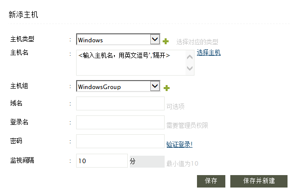
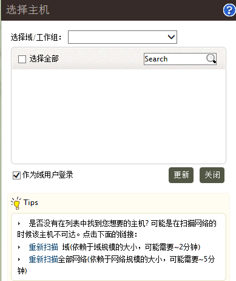
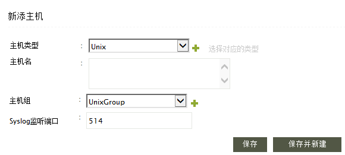
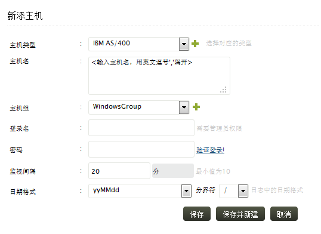

添加主机
在Web客户端中通过以下方法之一添加主机：
- 主页页签 > 主机 > +主机
- 下拉菜单+添加 > 主机
- 设置页签 >管理主机：新建
 |
说明：默认的主机类型有Windows、UNIX、IBM AS/400、Cisco Device和Syslog Device。如果要添加新的主机类型，点击“+”图标，然后输入新的类型名称。 |
添加Windows主机
确认在Windows主机上启用了WMI和DCOM；格模块/对象启用了日志。如果要把Windows事件日志转发成Syslog格式，要使用第三方工具，如SNARE。

-
选择主机类型为Windows。获取使用“+”图标创建新的主机类型。
-
输入主机名称。使用英文逗号分隔多个主机名称。提示：你可以从文本文件复制用英文逗号分隔的主机名称到这里来。
-
如果你使用管理员权限登录，你会看到选择主机链接。使用这个链接可以从工作组或者域中选择主机。
-
选择主机组。或者使用“+”图标来创建新的主机组。
-
如果主机位于本地工作组，域名是可选择的。否则要手动输入。如果使用选择主机链接选择的主机，域名会被自动填写。
-
输入登录名（就是用户名称）和密码以访问主机。用户应该有管理员权限，才能获取日志。使用验证登录链接来验证凭证是否正确。如果同时添加多个主机，确保凭证对所有主机有效。
-
输入监视间隔来配置Evenglog Analyzer从主机上获取日志的频率。默认值是10，也是最小值。
-
点击保存按钮来添加主机。使用保存并新建按钮来添加更多主机。
选择主机

-
选择你要添加主机所在的域或工作组。
-
使用选择全部来选择列出工作组或域中的所有主机。或者使用搜索栏来搜索主机，从搜索结果中选择你要的主机。
-
选中作为域用户登录来通过域凭证来访问所有选择的主机。
-
点击更新按钮来添加选择的主机。
-
如果列出的域或工作组中没有你要的主机，点击重新扫描域或工作组链接来扫描选择的工作组或域。
-
如果没有列出你要的主机、域、组织单位或工作组，点击重新扫描全部网络链接来扫描整个网络。
|
注意：如果EventLog Analyzer安装到了Linux机器上，是不能从Windows机器上收集事件日志的。这样的话，你就需要使用第三方工具来把事件日志转换成Syslog，然后转发给EventLog Analyzer。 |
|
说明：
收集历史日志：如果你要收集Windows事件浏览器中的历史日志，点击添加主机页面右上角的收集日志的文件夹图标，打开收集日志弹出窗口，选中“收集事件浏览器中所有的日志”来收集历史日志。选中了之后，EventLog Analyzer就会收集Windows事件浏览器中所有的历史日志。如果没有选择，就会只收集过去1小时的日志。注意：历史日志收集会占用大量的CPU和内存资源，请谨慎使用。 |
添加UNIX主机/思科设备/Syslog设备
配置UNIX/Linux主机发送Syslog到EventLog Analyzer，使用默认的Syslog端口（513和514），不需要在Evenglog Analyzer中添加UNIX主机，Evenglog Analyzer在收到日志后自动在主机列表中显示出UNIX主机。
如果UNIX/Linux主机没有自动列出来，参考下面的方法来排除故障：
- 检查EventLog Analyzer服务器和UNIX/Linux主机的网络连接。使用“ping”命令检查Eventlog Analyzer服务器和UNIX/Linux主机之间是否可达。
- 登录到EventLog Analyzer，点击显示监听端口明显来检查513、514端口是否打开正在监听。
- 如果端口不可用，说明端口被其他程序占用。这样的话，转发syslog到其他可用端口，在EventLog Analyzer中添加监听端口。或者停止占用这些端口的程序。
- 检查在UNIX/Linux主机上是否通过默认的513、514端口转发日志，或者是否使用其他的端口。
- 检查是否防火墙（Windows防火墙或其他防火墙软件）阻止了这些端口的数据。
- 如果问题还是存在，使用抓包工具，如Wireshark或Ethereal，检查UNIX/Linux机器是否发出了syslog数据包。
对于思科设备（交换机和路由器）、Hypervisor、VMware或任意其他syslog设备，你要首先配置其发送syslog到EventLog Analyzer，然后在主机管理中添加。

-
选择主机类型。获取使用“+”图标创建新的主机类型。
-
输入主机名称。使用英文逗号分隔多个主机名称。提示：你可以从文本文件复制用英文逗号分隔的主机名称到这里来。
-
选择主机组。或者使用“+”图标来创建新的主机组。
-
输入Syslog监听端口。
-
点击保存按钮来添加主机。使用保存并新建按钮来添加更多主机。
|
说明：在Linux主机中，确保syslog守候进程正在运行，并检查其端口是否和Evenglog Analyzer中一致。 |
使用主机组
添加了主机后，可以把它关联到主机组中。默认的主机组有Windows和UNIX。你也可以创建自己的主机组。
添加IBM iSeries (AS/400)主机
在Evenglog Analyzer上打开446-449、8470-8476、9470-9476端口用来接收IBM AS/400机器日志。

-
在添加主机页面中选择主机类型为IBM AS/400。
-
在主机名中输入单个或多个用英文逗号分开的主机名称。
-
选择要添加到的主机组。点击“+”图标来添加新的主机组。
-
输入选择主机的管理员登录名和密码。在密码框后有验证登录链接，点击该链接检查用户凭证是否可用。
-
输入监视间隔，配置EventLog Analyzer从IBM AS/400机器上获取日志的频率。默认值是10，也是最小值。
选择日志格式和日志中日期格式的分隔符。这个日期格式就是收集的IBM AS/400日志中的日期格式。
点击保存按钮来添加主机。使用保存并新建按钮来添加更多主机。
|
这个用户帐户是Evenglog Analyzer用来登录到AS400，必须有50的authority level。否则就不能登录获取历史日志。 |
添加VMware主机
-
在添加主机页面中选择主机类型为UNIX，按照上面添加UNIX主机的步骤进行添加。
-
按照这些步骤来配置WMWare的syslog。
-
在EventLog Analyzer开始接收VMware主机的syslog之后，按照下面的步骤把主机类型改为Hypervisor:
- 点击WMWare主机的编辑主机信息图标，打开编辑主机信息页面。
- 选择Hypervisor作为主机类型。
- 保存后该主机就是WMWare主机了。
添加Oracle应用
按照下面的步骤来配置要监视的Oracle：
按照这里的步骤添加Oracle应用服务器为Windows主机（如果Oracle应用运行在Windows机器上）或者按照这里的步骤添加为Linux主机（如果Oracle应用运行在Linux机器上）。
在添加了Widnows或Linux主机后，到设置 > 配置：管理应用：新建Oracle，就打开了配置Oracle主机页面。在添加主机文本框中输入Oracle应用服务器的主机名。点击保存图标。已有的主机列出在已有的主机的下面。
添加打印机服务器
按照下面的步骤来配置要监视的打印机服务器：
按照这里的步骤添加打印机服务器为Windows主机
在添加了Widnows主机后，到设置 > 配置：管理应用：新建打印机，就打开了配置打印机服务器页面。在添加主机文本框中输入打印机服务器的主机名。点击保存图标。已有的主机列出在已有的主机的下面。
在EventLog Analyzer中配置了打印机服务器之后，在打印服务器中进行以下配置。
打印服务器配置
启用打印服务器日志
打开事件查看器 > 应用和服务日志 > 打印服务，右击选择“启用日志”。这将启用“Admin”、“Debug”或“Operational”相应处理的日志。日志将显示在事件查看器中。
|
说明：如果打印服务器是64位的Windows操作系统（例如：Windows Vista及以上），进行如下配置：
- 通过运行“regedit”打开注册表编辑器。
- 打开计算机\HKEY_LOCAL_MACHINE\SYSTEM\CurrentControlSet\services\eventlog\
- 右击eventlog，点击新建> 项并创建Microsoft-Windows-PrintService/Operational or Admin or Debug
这将转变日志类型为可管理的，然后我们才能在Evenglog Analyzer中查询日志。
对于32位的Windows操作系统，不需要进行这些配置。 |
在UNIX主机上配置Syslog服务
-
以root用户登录，编辑/etc目录下的syslog.conf文件。
-
在最后添加一行：*.*<空格或制表符（按tab键）>@<服务器名>，<服务器名>就是运行EventLog Analyzer的机器。
-
保存并退出编辑器。
-
编辑/etc目录中的services文件。
-
更改syslog服务端口为514，514是EventLog Analyzer的默认端口之一。如果你使用其他端口，在Evenglog Analyzer添加主机的时候输入你的端口。
-
保存并退出编辑器。
-
重新启动syslog服务，命令为：
/etc/rc.d/init.d/syslog restart
在Linux主机上配置syslog-ng守候进程，要在at the end of /etc/syslog-ng/syslog-ng.conf的最后添加：
destination eventloganalyzer { udp("<主机名>" port(514)); };
log { source(src); destination(eventloganalyzer); };
<主机名>处输入运行EventLog Analyzer主机的IP地址。
在HP-UX/Solaris/AIX主机上配置syslog服务
-
以root用户登录。
- 编辑/etc目录中的syslog.conf文件，添加以下一行：
*.emerg;*.alert;*.crit;*.err;*.warning;*.notice;*.info;*.debug <tab-separation>@<server_name>
|
说明：对于Solaris主机，要在syslog.conf文件中添加*.debug<制表符（按tab键）>@<服务器名>就可以了。 |
<服务器名>就是运行EventLog Analyzer的机器。确保在*.debug和@<服务器名>之间只有一个制表符（按一次tab键）。
-
保存并推出编辑器。
-
编辑/etc目录中的services文件。
-
更改syslog服务端口为514，514是EventLog Analyzer的默认端口之一。如果你使用其他端口，在Evenglog Analyzer添加主机的时候输入你的端口。
- 执行下面命令来启动syslog守候进程：
/sbin/init.d/syslogd {start|stop}
具体命令：
(HP-UX) /sbin/init.d/syslogd start
(Solaris) /etc/init.d/syslog start
(Solaris 10) svcadm -v restart svc:/system/system-log:default
(IBM AIX) startsrc -s syslogd
在VMWare上配置Syslog服务
所有的ESX和ESXi主机都运行着一个syslog服务(syslogd)，来着VMkernel和其他系统组件都通过它来记录。
配置ESX主机的syslog:
可以使用vSphere客户端或者vicfg-syslog来配置ESX主机上syslog的特性。要配置ESX主机的syslog服务，必须编辑/etc/syslog.conf文件。
配置ESXi主机的syslog:
在ESXi主机上，你可以使用vSphere客户端或vSphere命令行命令vicfg-syslog配置如下选项：
- 日志文件目录：指定所有保存syslogd消息文件的路径。
- 远程主机：指定syslog消息转发到的远程主机。为了收集到转发的syslog消息，你的远程主机上必须安装了syslog服务。
- 远程端口：远程主机接收syslog消息所使用的端口。
使用vSphere命令行命令配置syslog：
参考vicfg-syslog的资料：vSphere命令行接口安装和参考手册。
使用vSphere客户端配置syslog：
-
在vSphere客户端目录中点击主机。
-
点击配置标签。
-
点击软件下的高级设置。
-
在树形控制台中选择Syslog。
-
在Syslog.Local.DatastorePath文本框中输入syslog消息的数据存储路径。如果没有指定路径，将使用默认路径/var/log/messages。
数据存储路径格式为[<datastorename>] <文件路径>路径是相对路径。
例如：数据存储路径[storage1] var/log/messages对应为/vmfs/volumes/storage1/var/log/messages。
-
在Syslog.Remote.Hostname文本框中输入syslog转发的远程主机名称，如果没有转发将不会转发数据。
-
在Syslog.Remote.Port文本框中输入上面远程主机的端口。默认的Syslog.Remote.Port设置为514，是UDP端口。对Syslog.Remote.Port的更改只有在配置了Syslog.Remote.Hostname后才有效。
-
最后确定。
在思科交换机上配置Syslog服务
-
登录到设备。
-
转为配置模式。
-
执行下面的配置（这里已Catalyst 2900交换机为例）把日志发送到EventLog Analyzer服务器：
<Catalyst2900># config terminal
<Catalyst2900>(config)# logging <EventLog Analyzer IP>
对于较新的catalyst交换机：
Catalyst6500(config)# set logging <EventLog Analyzer IP>
当然还可以配置facility、trap通知等等其他选项。如：
Catalyst6500(config)# logging facility local7
Catalyst6500(config)# logging trap notifications
|
说明：同样的命令也可以应用到思科路由器上。
请参考Cisco®文档中对于各种交换机路由器的详细syslog配置步骤。如果你的思科设备的syslog格式和Eventlog Analyzer支持的标准syslog格式不一样，请联系我们。 |
|